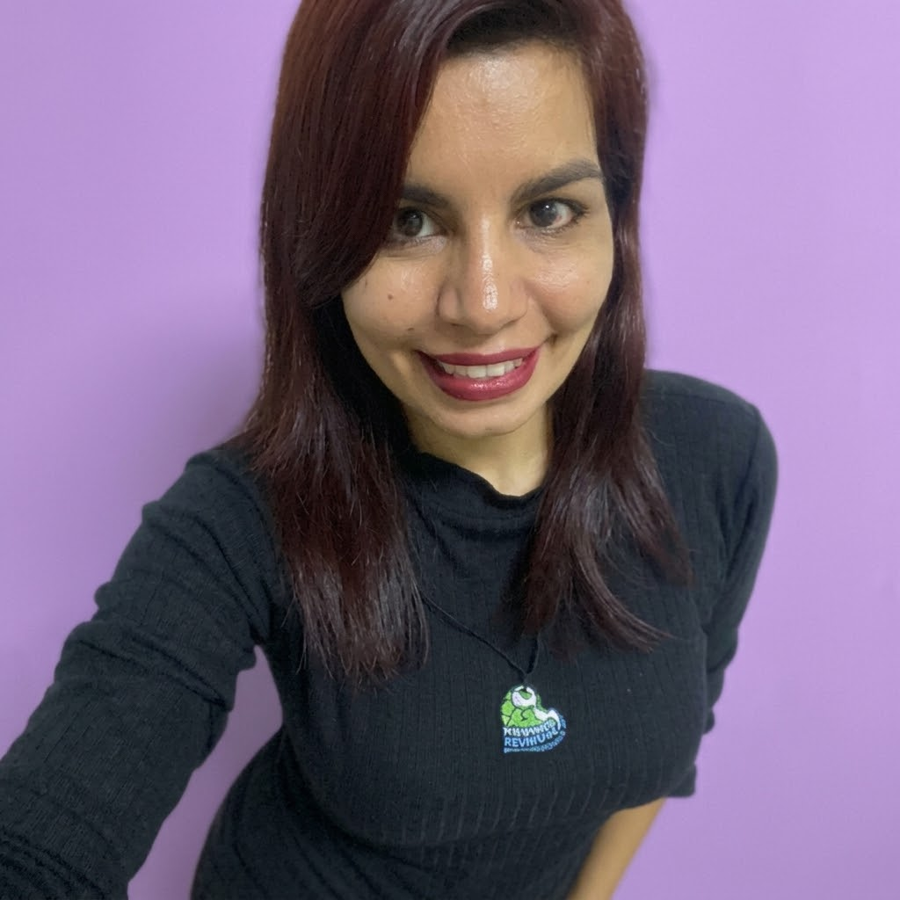
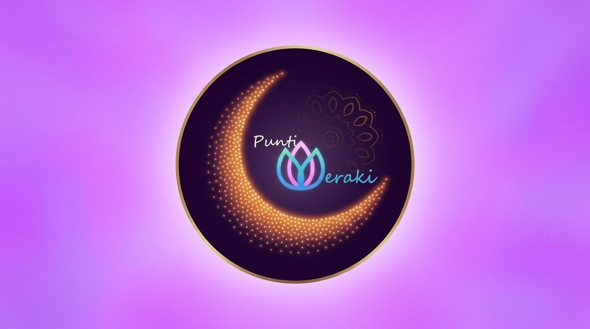

Soy una artista caraqueña apasionada por el arte del puntillismo, una técnica que requiere infinita paciencia, dedicación y amor por los detalles.
Cada creación es el resultado de horas de trabajo minucioso, pruebas constantes y sobre todo, mucha pasión por crear piezas únicas que transmitan emociones.
A lo largo de los años, he aprendido que el arte del puntillismo es mucho más que colocar puntos sobre una superficie: es un acto de meditación, paciencia y creatividad. Cada portavelas, cada separador de libro, cada pieza que creo lleva consigo horas de dedicación, diseños mejorados una y otra vez hasta alcanzar la perfección, y el amor de alguien que cree en hacer las cosas con el alma.

El nombre Puntimeraki nació de la fusión de dos conceptos que definen mi esencia creativa. "Punti" hace referencia al puntillismo, la técnica artística que utilizo en cada una de mis creaciones, donde miles de puntos se unen para formar obras llenas de color y vida. "Meraki" es una palabra griega que significa hacer algo con creatividad, amor, alma y pasión, dejando una parte de uno mismo en lo que se hace.
Por lo tanto, Puntimeraki transmite la idea de crear o hacer las cosas con el alma y con un enfoque muy personal y detallista. Es mi forma de decirle al mundo que cada punto que coloco, cada pieza que creo, está hecha con amor, paciencia y dedicación.
Hoy sigo creciendo, aprendiendo nuevas técnicas y mejorando cada día. Cada nueva creación es una aventura, cada cliente es parte de mi familia, y cada día frente a mi mesa de trabajo es una oportunidad para hacer algo especial. Gracias por permitirme ser parte de tus momentos y por valorar el arte hecho a mano con el corazón.
Con amor y paciencia, tu artista de Puntimeraki 🎨✨